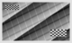

R045 远端返修棚交接单
离线可核：3 个格位 · 1 个单声道 WAV · 随单地址清单 · 不需服务端/母带源母带 SHA-256：c2ad1b308a9c60778dd8b9bf145782cf6ce4096eb682f663c0c002416881b900
无图段地址：5000000–6000000 μs
（00:00:05.000000 → 00:00:06.000000）
复核结论
判断一：看似连续的冻帧没有同一个源格跨过无图段。
格位 2 是洞前最后源格
格位 2 是洞前最后源格
V09-04500ms；
格位 3 是洞后第一源格 V10-06000ms。
两格灰阶像素 SHA-256 完全相同，但源地址不同，中间是无图段
5000000–6000000 μs。
这是“同像素的两个源格”，不是一个长格跨洞。格位 1 的两个目标地址都映射到同一源格，
用来说明清单中“多目标点 → 同一长格”的真实形态。
判断二：无图段两边的伴音都确实来自源。
洞前标记
洞前标记
L-BEFORE 与洞后标记
R-AFTER 均在清单列为
source_covered 的原始 PCM 区间。WAV 中的零声有两类：
清单标 recorded_silence 的是源内实录零声；标 extract_fill
或 filled_zero_sample_ranges 的是无覆盖区间的摘片补零。
可选离线自检：在本 ZIP 解压根目录运行 python3 verify_handoff.py .，
或先运行 sha256sum -c SHA256SUMS。
三个静态画格格位（禁止拼图并入同一格）
格位 1 / 3

目标：T-L1 @
3700000→
V08-03500msT-L2 @
4200000→
V08-03500ms唯一源格：
V08-03500ms源覆盖：
3500000–4500000 μs
格位 2 / 3

目标：T-B0 @
4750000→
V09-04500ms唯一源格：
V09-04500ms源覆盖：
4500000–5000000 μs
格位 3 / 3

目标：T-A0 @
6250000→
V10-06000ms唯一源格：
V10-06000ms源覆盖：
6000000–6500000 μs
三个文件均为从源解码缩略平面写出的单个 80×48 灰阶 PNG；CSS 仅做放大显示，不改变格位数量或拼接内容。格位 2、3 文件哈希相同是本样件故意保留的“同像素、不同源格”情况。
唯一 WAV 附件：可直接打开
audio/R045-primary-mono.wav
（mono / 8000 Hz / 16-bit，源采样 [35200,60800)）
必须按地址清单区分的补零段
[44800,46400)采样 /5600000–5800000μs：摘片补零，不是实录静音[54400,56800)采样 /6800000–7100000μs：摘片补零，不是实录静音
| ID | 区段 | 类型 | 源采样地址 | RMS | Peak |
|---|---|---|---|---|---|
| L-BEFORE | 洞前源内标记音 | source_tone | 36000–37600 | 8485 | 12000 |
| SIL-REC | 实录数字零声 | recorded_silence | 37600–40000 | 0 | 0 |
| BED-IN-HOLE | 无图段内源内低鸣 | source_tone | 40000–44800 | 3535 | 5000 |
| FILL-INNER | 摘片补零（内部声洞） | extract_fill | 44800–46400 | 0 | 0 |
| R-AFTER | 洞后源内标记音 | source_tone | 48000–49600 | 8485 | 12000 |
| SIL-REC-2 | 第二段实录零声 | recorded_silence | 50400–52800 | 0 | 0 |
| FILL-LATER | 摘片补零（后段声洞） | extract_fill | 54400–56800 | 0 | 0 |
| CHIRP-RESUME | 补零后源内恢复音 | source_tone | 56800–58400 | 7071 | 10000 |
随单地址清单（机器可读原件：addresses.json）
addresses.json ·
addresses.md 可读地址表 ·
SHA256SUMS
完整 JSON 与本单一起交付；上表为伴音区段，画格地址见各格位说明。
本件不包含服务端 URL、取证件 token 或要求回服务端的步骤。